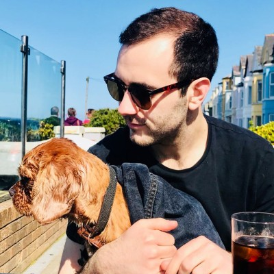

Padraic Brown
Project Manager | Big House Creative | Web Development
Areas of Expertise:
Project Management | UX / UI Testing | Budget Allocation & Management | GDPR
Projects
Lets Go Hydro
Deliverables: Bespoke booking system and content management system (CMS) for a large outdoor leisure park built using Laravel PHP framework.
Success Criteria: Increase in online bookings and turnover. The implementation of this system saw a £3.8million increase in turnover on the previous year which was managed on multiple third party systems.
Project: Defined requirements and prioritised requests from the client
- - Managed designer and developer tickets, prioritisation and progress
- - Worked with developers on logic for multiple SQL queries
- - UX/ UI testing, copy and content updates
- - Image optimisation for web
Transport Training Services
Deliverables: Bespoke booking system and content management system (CMS).
This booking system was built using the Laravel PHP framework and Vue.js.
Success Criteria: Increase in bookings and turnover.
Soft launch bookings indicate there will be an increase in bookings post launch.
Project: Requirements gathering and prioritisation of requests from the client
- - Onboarding: contract agreements and payment structures
- - Took part in a design workshop alongside the client and designer
- - Managed designer and developer tickets, logic, prioritisation and progress
Artisan Finnebrogue
Deliverables: Multiple Wordpress websites built using Timbertwig PHP framework and complementary coding languages CSS and HTML.
Websites: Finnebrogue Corporate, Better Naked, and The Good Little Company.
Client Success Criteria: Increase in customer engagement and website visiting time, as well as an increase in turnover through retail.
Our Company Success Criteria: In addition to above, our internal success is measured on the retainer with the client and involvement in all future projects.
Project: Onboarding / Requirements Gathering / Ticket Management / Testing
- - Created content templates for the client to create content to match the design
- - Inputting stockist / product data through CSVs and SQL Queries to be stored & used in a geolocator
Job History
| Dates |
Position |
Responsibilities |
| July 2020-Present |
Project Manager in Web Development - Big House Creative |
- Project Initiation
- Gather requirements from client, working with them to establish their user needs
- Collaborate with UX/UI designers on website and feature design
- Analysis of time allocation and costing of deliverables
- Agree project plan, fee, milestones & success criteria internally, & with the client
- Project Delivery
- Create Project Plans and work with stakeholders to agree milestones and risks
- Implement Project Management tools to create an efficient workflow among the team (Using Trello, Gloomaps and Google Drive)
- Define and prioritise tickets for developers
- UAT testing through prototype, development and release stages, feedback to developers on bugs and variations from agreed design
- Provide support for clients upon completion of the build (WordPress upskilling)
|
| October 2018-July 2020 |
Levis / Dr Marten, Location — Assistant Store Manager |
- Operations: Key holding, banking responsibilities, stock take, loss prevention
- Finance: Monitor KPIs, team performance and the stores P&L / Audits
- People: Responsible for recruitment, rotas, staff training and half year reviews.
|
| April 2016-October 2018 |
Venue Manager - The National |
- Operations: Key holding, cash handling and stock control
- Finance: Track and deliver on KPI targets, implement profit opportunities / Payroll
- People: Manage 15 staff members / Training / Recruitment / Disciplinary
|
My Hobbies
Contact Me